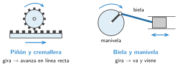

Transformación de movimiento
🤔 Pienso5 min
Qué hago aquí: Piensa un momento y contesta con lo que ya sabes. No pasa nada si no lo sabes: es para empezar.
El motor del limpiaparabrisas gira siempre en el mismo sentido. Pero la escobilla va de un lado a otro. ¿Cómo crees que lo hace?
✏️ Puedes responder escribiendo, con un dibujo o un esquema, o contándolo en voz alta.
📖 Leo y aprendo15 min
Qué hago aquí: Lee despacio, mira los dibujos y los ejemplos, y quédate con la idea clave del final.
Hay tres tipos de movimiento:
- Circular: gira, como una rueda.
- Lineal: va en línea recta, como un cajón.
- De vaivén: va y viene, como una sierra.
Un mecanismo de transformación cambia un tipo de movimiento por otro.

✏️ Hago25 min
Qué hago aquí: Haz las actividades en orden. Empieza siempre por las básicas.
Une cada movimiento con un ejemplo.
| Circular • | • Una sierra |
| Lineal • | • Una rueda |
| De vaivén • | • Un cajón |
Completa la tabla.
| Mecanismo | Entra | Sale |
|---|---|---|
| Piñón y cremallera | giro | |
| Biela y manivela | giro | |
| Tornillo y tuerca | giro |
¿Qué mecanismo tiene cada aparato? Puerta corredera, gato del coche, máquina de coser.
Vuelve a Pienso. ¿Qué mecanismo mueve el limpiaparabrisas?
Un robot tiene que empujar cajas fuera de una cinta, una y otra vez. Su motor siempre gira igual. ¿Qué mecanismo le pones? ¿Por qué?
🚀 Amplío (si quieres saber más)
Qué hago aquí: ¿Has terminado? Lee la curiosidad o elige el reto. Es voluntario.
Diseña la pinza de un robot que se abra y se cierre con un solo motor. Dibuja el mecanismo y di qué movimiento hace cada pieza.
✏️ Puedes responder escribiendo, con un dibujo o un esquema, o contándolo en voz alta.
✅ Compruebo5 min
Qué hago aquí: Contesta sin mirar la ficha y marca cómo lo llevas.